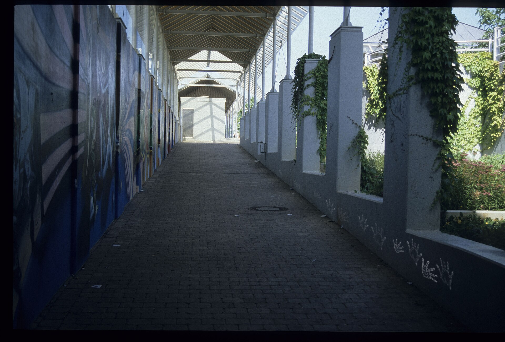

Twelve hands along the wall, the near ones pressed hard, the far ones nearly gone.
The passage is a photograph, Bahnhof Sachsenheim, Staatsarchiv Ludwigsburg (Landesarchiv Baden-Württemberg), taken 18 June 2000, CC BY 4.0. I changed it: added the hands (stamps made with an image model, composited and faded by me). This version is also CC BY 4.0.